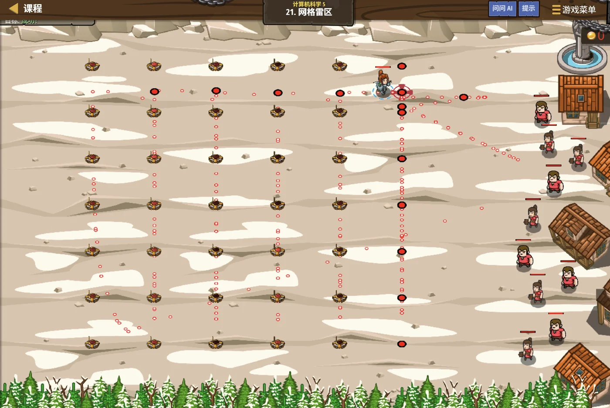

故事：面前是一片 100×100 的雷区，你要把每一格都走一遍，
才能确定哪几块地方是安全的。
一格一格走太慢？塞尼克摇头，可这就是最稳的办法——
系统地走完每一格，一个都不会漏。
扣哒考级 · GESP C++ 七级 · 第 4 单元 | 雷鸣高塔 THUNDERSPIRE
雷池漫灌 泛洪算法
Flood Fill

塞尼克
沙海向导 · 你的向导
雷鸣高塔的底层是一片雷池。你在池子一角倒下一点水，
水顺着缝隙慢慢渗开——凡是有缝的地方，它都会流过去，
直到整片区域都被淹没。
塞尼克看着水面：记住这个过程。有一类算法，就是照着它想出来的。
塞尼克看着水面：记住这个过程。有一类算法，就是照着它想出来的。
塞尼克 · 沙海向导
上一单元我们学会了图。这一单元讲泛洪——它其实就是"在网格图上做一次搜索"。听起来简单，但它能解决的问题特别多：数连通块、判断区域大小、找最短扩散步数……
而且它的写法非常有套路，学会一次，能用一辈子。
assets/illustrations/py-L7-04-00_thunder_flood.webp
【配图位】高塔底部被雷网笼罩的蓄水池：无数道细闪电在水面上下游走，水面每隔几秒便向四周漫开一圈发光的涟漪，把整片池子照亮；英雄站在池边的石台上，手中法杖指着将要漫水的方向。
0 单元导语与目标
Unit Overview
0.1 学习目标
0.2 考纲对照
1学完这个单元，你将能……
- 说清泛洪算法与 BFS/DFS 的关系
- 用"四方向数组"处理网格上的扩散
- 用递归或队列实现泛洪
- 统计网格中的连通块数量
- 求最大连通块的大小
- 判断哪些问题适合用泛洪
2对标 GESP 考纲（C++ 七级）
- 理解泛洪算法（Flood Fill）的基本思想
- 掌握网格上的遍历方法：四方向/八方向扩散
- 能用泛洪解决连通块统计、区域填充等问题
- 考核目标：能写出泛洪程序并正确处理边界与标记
1 水是怎么渗开的
How Water Spreads
1.1 水从起点渗开
图 2（SVG）：泛洪——水从起点向四周渗开
1.2 泛洪的本质
泛洪的本质：
泛洪就是"从起点出发，把能走到的格子全部访问一遍"。
· 用队列一层层扩散 → 得到每格的最短步数（本质是 BFS）
· 用递归一条道走到黑 → 只关心"能不能到达"（本质是 DFS）
所以泛洪不是新算法，而是搜索算法在网格上的应用。
· 用队列一层层扩散 → 得到每格的最短步数（本质是 BFS）
· 用递归一条道走到黑 → 只关心"能不能到达"（本质是 DFS）
所以泛洪不是新算法，而是搜索算法在网格上的应用。
2 泛洪就是特殊的搜索
Flood Fill Is Just Search
2.1 泛洪就是一次搜索
| 对比项 | 图上的搜索（七级第 3 单元） | 网格上的泛洪 |
|---|---|---|
| 顶点是什么 | 抽象的节点 | 网格里的每一格 |
| 邻居是谁 | 邻接表里列的邻居 | 上下左右四格 |
| 访问标记 | visited 集合 | 直接在网格上改值，或另开一张标记表 |
| 能不能走 | 邻接表里有的就能走 | 不是墙、且没出界才能走 |
| 典型问题 | 连通分量、最短路径 | 数连通块、区域填充、扩散步数 |
2.2 一句话对应
一句话对应：
把"网格"看成图，把"上下左右相邻"看成边——泛洪就是在这个图上做 BFS 或 DFS。
所以你在六级学的搜索，在这里直接就能用。
所以你在六级学的搜索，在这里直接就能用。
assets/illustrations/py-L7-04-02_flood_spread.webp
【配图位】塔底的方形水池里，一小股水从中心涌出，已经淹到的格子泛着浅蓝、正在漫的格子边缘亮着水光、还没淹到的格子干着；每漫一圈，水头都往外推进一格。
3 四个方向
Four Directions
3.1 方向数组
网格题里最常用的一个技巧：把四个方向写成数组，循环着试。
方向数组：比写四个 if 清爽得多
C++
// 上、下、左、右 对应的行号与列号变化
int DIRS[4][2] = {{-1, 0}, {1, 0}, {0, -1}, {0, 1}};
// 用的时候循环一遍
for (int k = 0; k < 4; k++) {
int dr = DIRS[k][0], dc = DIRS[k][1];
int nr = r + dr; // 新行号
int nc = c + dc; // 新列号
// 然后判断 (nr, nc) 是否合法
}
要点 一个循环顶四个 if-elif；想改成八方向，只要往数组里再加四个
3.2 判断这一格能不能走
判断"这一格能不能走"
C++
bool canGo(vector<string>& grid, int nr, int nc) {
// ① 不能出界
if (nr < 0 || nr >= grid.size()) return false;
if (nc < 0 || nc >= grid[0].size()) return false;
// ② 不能是墙，也不能已经走过
if (grid[nr][nc] == '#') return false;
return true;
}
三件事 出界检查 → 障碍检查 → 是否访问过
4 典型应用
Typical Uses
4.1 填色与连通块
| 问题 | 怎么做 | 用队列还是递归 |
|---|---|---|
| 数连通块 | 遍历每个格子，遇到没访问过的就泛洪一次，计数加一 | 都行 |
| 最大连通块大小 | 每次泛洪时数一数覆盖了多少格，取最大 | 都行（递归时用全局计数） |
| 能不能走到某处 | 从起点泛洪，最后看目标点有没有被标记 | 都行 |
| 最少几步到达 | 用队列一层层扩散，记录步数 | 必须用队列（BFS） |
| 区域填色 | 把连通区域的颜色统一改掉 | 都行 |
4.2 注意最后一行
注意最后一行：
问"最少几步"时，必须用队列（BFS），不能用递归。
因为递归是"一条道走到黑"，它到达目标时走的未必是最短的路——这一点在六级就强调过了。
因为递归是"一条道走到黑"，它到达目标时走的未必是最短的路——这一点在六级就强调过了。
assets/illustrations/py-L7-04-03_direction_arrows.webp
【配图位】池边一格上画着四支朝向不同的发光箭头：上、下、左、右，每支箭头旁标着一对偏移量"-1,0 / 1,0 / 0,-1 / 0,1"；一名学徒把这四对数字抄进一块写着"方向数组"的石板里。
5 代码实战
Level Practice
关卡
网格雷区
进入关卡 →思路：用双重循环把网格的每个交点都访问一遍。 这正是泛洪的"表亲"——只不过这里不是从一点扩散，而是系统地扫过全域。

assets/stages/py-L7-04-stage1_grid_mines.webp
【关卡截图位】请把《网格雷区》的游戏画面截图放到此处（放入 assets/stages/ 目录，文件名为 py-L7-04-stage1_grid_mines.webp）。
重点示例：双重循环扫过整个网格
C++
for (int x = 10; x < 100; x += 10) { // 横向：10, 20, ..., 90
for (int y = 10; y < 100; y += 10) { // 纵向：10, 20, ..., 90
hero.moveXY(x, y);
// 每一格都走到，就不会漏
}
}
输出顺序 (10,10) → (10,20) → … → (10,90) → (20,10) → …
和泛洪的关系：
系统扫描是"把每一格都看一遍"，适合"全局普查"；
泛洪是"从一点出发，只走向能到的地方"，适合"局部扩散"。
如果题目问"有几块区域"，就要两者配合：外层扫描找起点，内层泛洪圈出整块。
去扣哒世界闯这一关 →
泛洪是"从一点出发，只走向能到的地方"，适合"局部扩散"。
如果题目问"有几块区域"，就要两者配合：外层扫描找起点，内层泛洪圈出整块。
6 常见陷阱
Common Pitfalls

扣哒鸭 · 调试官
泛洪的代码不长，但边界和标记最要命。四条，前两条能救你半条命。
1
忘记检查数组越界。直接访问
grid[nr][nc]。
扣哒鸭：先判断
顺序反了会报 IndexError；更糟的是 C++ 里负下标同样不报错， 而是跑到数组外面去读写，结果莫名其妙。
0 <= nr < n 和 0 <= nc < m，
再访问格子。顺序反了会报 IndexError；更糟的是 C++ 里负下标同样不报错， 而是跑到数组外面去读写，结果莫名其妙。
正确顺序：先判出界 → 再判障碍 → 再判访问
2
忘了标记，程序无限递归。

扣哒鸭：泛洪时 A 走到 B，B 又能走回 A——不标记就会来回弹。
进入格子时立刻标记（把格子改成墙、或标记成已访问）。 这一步和图的遍历完全一样。
进入格子时立刻标记（把格子改成墙、或标记成已访问）。 这一步和图的遍历完全一样。
正确做法：一进格子就标记，再扩散到邻居
3
求"最少步数"却用了递归泛洪。

扣哒鸭：递归只保证"能到"，不保证"最近"。
求最短步数必须用队列，一层层往外扩。
求最短步数必须用队列，一层层往外扩。
正确做法：求最短 → 队列（BFS）；求连通 → 递归也行
4
递归层数太深导致栈溢出。

扣哒鸭：网格一大（比如 1000×1000），递归泛洪可能有几百万层，
C++ 会因为栈空间耗尽直接崩溃。
大网格建议改用队列写泛洪，或者用栈模拟递归。
大网格建议改用队列写泛洪，或者用栈模拟递归。
建议：网格较大时用队列（迭代）代替递归
7 题目练习
Practice
第 1 题改编自 2026 年 9 月 · C++ 七级 第 8 题，其余为原创练习题。
改编自 2026 年 9 月 · C++ 七级 · 第 8 题单选题
在二维网格上实现泛洪填充时，为了防止递归层数过深，最适合的非递归实现方式是（ ）。
A.使用哈希表记录每个格子被访问的次数
B.使用快速排序预处理网格
C.使用二分查找定位边界
D.使用队列实现 BFS，或使用显式栈模拟 DFS
B.使用快速排序预处理网格
C.使用二分查找定位边界
D.使用队列实现 BFS，或使用显式栈模拟 DFS
查看答案与详解
答案：D。递归版泛洪的问题在于：每一格都压一层函数调用栈，网格一大（比如 1000 × 1000）栈就爆了。
要摆脱递归，就把"接下来要去哪儿"自己存起来：
· 用队列——先进先出，就是 BFS，一圈一圈往外漫；
· 用显式栈——后进先出，效果等同于原来的递归 DFS，但栈是建在堆上的，不会爆。
A 错：统计访问次数既不能减少递归深度，还会让逻辑变复杂；
B、C 错：排序和二分查找跟"遍历连通格子"没有关系，网格也不是有序数组。
一句话记：递归怕深就用自己开的容器存待访问点 —— 队列做 BFS、栈做 DFS。
对应小节3 大网格怎么办。
要摆脱递归，就把"接下来要去哪儿"自己存起来：
· 用队列——先进先出，就是 BFS，一圈一圈往外漫；
· 用显式栈——后进先出，效果等同于原来的递归 DFS，但栈是建在堆上的，不会爆。
A 错：统计访问次数既不能减少递归深度，还会让逻辑变复杂；
B、C 错：排序和二分查找跟"遍历连通格子"没有关系，网格也不是有序数组。
一句话记：递归怕深就用自己开的容器存待访问点 —— 队列做 BFS、栈做 DFS。
对应小节3 大网格怎么办。
原创练习题单选题
关于泛洪算法，下列说法正确的是（ ）。
A.它是一种全新的、与搜索无关的算法
B.它本质上是网格图上的 BFS 或 DFS
C.它只能用来填色
D.它不需要访问标记
B.它本质上是网格图上的 BFS 或 DFS
C.它只能用来填色
D.它不需要访问标记
查看答案与详解
答案：B。泛洪就是"在网格图上做一次搜索"——
用队列时是 BFS，用递归时是 DFS。
用途也很广：数连通块、求区域大小、算扩散步数、填色都行。
对应小节1 水是怎么渗开的；2 泛洪就是特殊的搜索。
用途也很广：数连通块、求区域大小、算扩散步数、填色都行。
对应小节1 水是怎么渗开的；2 泛洪就是特殊的搜索。
原创练习题单选题
在网格中，表示"上、下、左、右"四个方向的行列变化数组，正确的是（ ）。
A.
B.
C.
D.
{{-1,0}, {1,0}, {0,-1}, {0,1}}B.
{{0,1}, {0,2}, {0,3}, {0,4}}C.
{{1,1}, {2,2}, {3,3}, {4,4}}D.
{{0,0}, {0,0}, {0,0}, {0,0}}
查看答案与详解
答案：A。上行行号减 1（行号越小越往上），下行行号加 1，
左列列号减 1，右列列号加 1。
记忆：行列的变化量只会是 -1、0、1 的组合。
对应小节3 四个方向。
记忆：行列的变化量只会是 -1、0、1 的组合。
对应小节3 四个方向。
原创练习题判断题
用泛洪求"从起点到某格的最少步数"时，应该用队列实现而不是递归。（ ）
查看答案与详解
答案：正确（√）。队列实现的是 BFS，一层层往外扩，
第一次到达某格时的步数一定最少。
递归是"一条道走到黑"，到达时未必是最短路径。
对应小节4 典型应用。
递归是"一条道走到黑"，到达时未必是最短路径。
对应小节4 典型应用。
原创练习题单选题
一个 3×3 的网格全是通路（没有墙），从左上角 (0,0) 泛洪，
几格会被访问到？（ ）
A.3 B.6 C.9 D.12
查看答案与详解
答案：C。网格一共 9 格，全都是通路且互相连通，
所以从任何一格出发都能访问到全部 9 格。
注意：如果中间有墙把网格隔开，被隔开的那部分就访问不到——这正是"连通块"的概念。
对应小节4 典型应用。
注意：如果中间有墙把网格隔开，被隔开的那部分就访问不到——这正是"连通块"的概念。
对应小节4 典型应用。
原创练习题判断题
统计网格中有几个连通块时，应遍历每个格子；每遇到一个"未访问且可通行"的格子，
就从它泛洪一次，并把计数加一。（ ）
查看答案与详解
答案：正确（√）。这正是标准的"数连通块"套路：
外层系统扫描每个格子，内层泛洪圈出一整块。
泛洪结束后那一块全部被标记，外层继续找下一个没标记的，就是新的一块。
对应小节4 典型应用。
外层系统扫描每个格子，内层泛洪圈出一整块。
泛洪结束后那一块全部被标记，外层继续找下一个没标记的，就是新的一块。
对应小节4 典型应用。
原创练习题单选题
写"判断某格能不能走"的函数时，第一件要做的事是（ ）。
A.判断这一格是不是墙
B.判断是否已经访问过
C.判断行号列号有没有越界
D.把这一格标记为已访问
B.判断是否已经访问过
C.判断行号列号有没有越界
D.把这一格标记为已访问
查看答案与详解
答案：C。必须先用行号列号判断有没有出界，
再谈其他条件——否则访问
顺序：出界检查 → 障碍检查 → 访问检查。
对应小节3 四个方向；6 常见陷阱。
grid[nr][nc] 时就已经越界了。顺序：出界检查 → 障碍检查 → 访问检查。
对应小节3 四个方向；6 常见陷阱。
原创练习题编程题
题目要求：用泛洪统计下面网格中有几个连通块（
# 表示墙，
. 表示通路），并输出最大连通块的格子数。grid = [ "..##..", "..##..", "######", "..#...", "..#..." ]
查看参考答案与要点
vector<string> grid = {
"..##..",
"..##..",
"######",
"..#...",
"..#..."
};
int n = grid.size();
int m = grid[0].size();
vector<vector<bool>> visited(n, vector<bool>(m, false));
int DIRS[4][2] = {{-1, 0}, {1, 0}, {0, -1}, {0, 1}};
int flood(int r, int c) {
vector<pair<int, int>> st;
st.push_back({r, c});
visited[r][c] = true;
int size = 0;
while (!st.empty()) {
int cr = st.back().first, cc = st.back().second;
st.pop_back();
size = size + 1;
for (int k = 0; k < 4; k++) {
int nr = cr + DIRS[k][0], nc = cc + DIRS[k][1];
if (0 <= nr && nr < n && 0 <= nc && nc < m) { // 先判出界
if (grid[nr][nc] == '.' && !visited[nr][nc]) {
visited[nr][nc] = true; // 立即标记
st.push_back({nr, nc});
}
}
}
}
return size;
}
int count = 0, biggest = 0;
for (int i = 0; i < n; i++) {
for (int j = 0; j < m; j++) {
if (grid[i][j] == '.' && !visited[i][j]) {
int size = flood(i, j);
count = count + 1;
if (size > biggest) biggest = size;
}
}
}
cout << "连通块个数：" << count << endl;
cout << "最大连通块大小：" << biggest << endl;
输出：连通块个数 4，最大连通块大小 4
分析：左上 2×2 一块（4 格）、右上 2×2 一块（4 格）、左下竖着的 2 格一块、第 4 行单格一块。
要点：
① 用 visited 二维表做标记，比直接改网格更清晰；
② 这里用栈模拟递归，避免网格大时递归太深；
③ 边界判断必须在访问格子之前；
④ 外层双重循环负责"找新起点"，内层泛洪负责"圈出整块"。
对应小节3 四个方向；5 代码实战。
8 本单元小结
Unit Summary
塞尼克 · 沙海向导
三句话记住泛洪：一、泛洪就是网格上的 BFS/DFS，不是新东西。
二、四个方向写成数组，循环着试，比写四个 if 清爽。
三、先判出界、再判障碍、最后判访问；一进格子就标记。
再说一次最关键的一条：求最少步数必须用队列，不能用递归。
你在雷池边收获了什么
- 泛洪——从起点出发把能到达的格子全部访问一遍，本质是网格上的搜索。
- 与搜索的对应——格子就是顶点，上下左右相邻就是边。
- 方向数组——
int DIRS[4][2] = {{-1,0}, {1,0}, {0,-1}, {0,1}}，循环处理。 - 合法性检查顺序——先判出界，再判障碍，最后判是否访问过。
- 标记时机——进入格子立刻标记（入队/入栈时）。
- 典型应用——数连通块、求最大块、判断能否到达、算最短步数、区域填色。
- 选型——求最短用队列；求连通用递归或栈都行；大网格建议避免深递归。